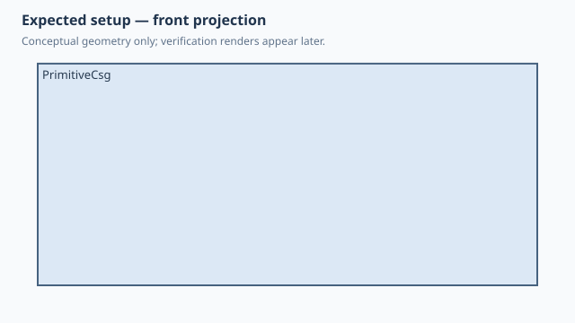

← Qualification / Primitive CSG
Forge qualification case
NOT RUNQ1 Q2 documented
Primitive CSG
1. Test setup

Test goal
Qualify direct primitive/CSG modelling independently of feature-history geometry: Sphere and Box union, translated primitives, one ordinary Cylinder cut and intersection.
Pass criteria
SolidCraft accepts the complete CSG command path, produces one valid clipped body and evaluates the native timeline without errors.
2. Implementation under test
Fixture source
"""Core CSG qualification: primitives, transforms and Boolean operations."""
class PrimitiveCsg:
def build(self):
body = Sphere(20)
body = body + Box(30, 30, 20).move(x=18, z=10)
# Cylinder stays deliberately simple: its primitive axis is Z.
bore = Cylinder(d=8, h=60).move(z=-30)
body = body - bore
clip = Box(50, 50, 30).move(z=15)
return body & clip
PrimitiveCsg()
Public Forge API used
Sphere(); Box(...).move(...); Cylinder(...).move(...); + / - / &
Forge model represented by this fixture
A Shape CSG tree rooted in Sphere so Forge deliberately selects the direct CSG compiler instead of the feature-history Box compiler.
3. Generated SolidCraft relationship
solid.sphere(new), solid.box(join), one Z-axis solid.cylinder(cut), then solid.box(intersect).
Show generated relationship / command details
solid.sphere
solid.box
solid.cylinder
solid.box3. Results
Native result data was not supplied to this site build. Run the native qualification for measured results.
No source-matched native verification was supplied to this site build. The case sheet and command contract are still shown.
6. Evidence and references
Raw evidence
Show generated files and measurements
Reference models
These comparisons clarify concepts; Forge does not promise API compatibility with them.
- OpenSCAD: Closest to ordinary union()/difference()/intersection() with translate()/rotate() around primitives.
- PythonSCAD: Useful comparison for Python objects and operators while Forge still delegates all geometry to SolidCraft.